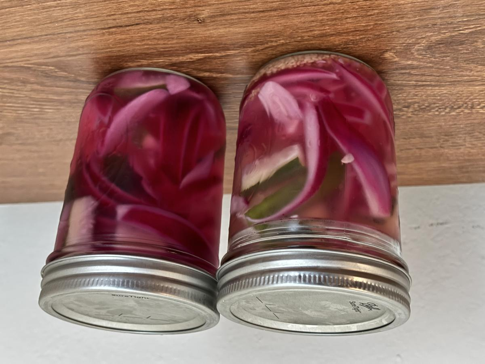

Based on https://newsletter.ethanchlebowski.com/p/pickle-anything-framework-729d
Personal rating: 4 / 5

Chopped Red Onions, Cucumber, Bell Peppers, Carrots, Cauliflower, Green Beans, etc.
200 ml water
200 ml vinegar
2% salt by by weight of brine
1 tsp sugar
Whole spices (bay leaves, peppercorns, mustard seeds, star anise, etc.)
Herbs (dill, tarragon, fennel, etc.)
Garlic cloves, quartered
Jalapeno, diced